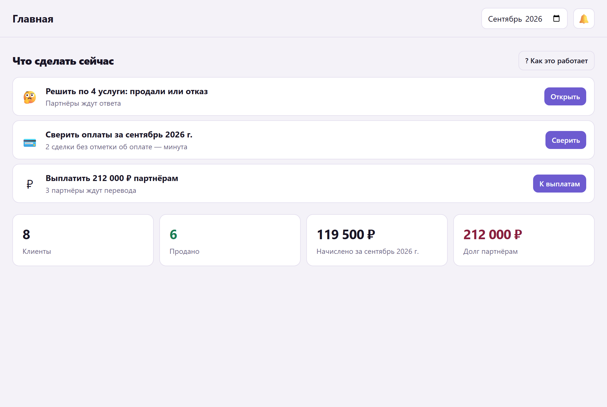
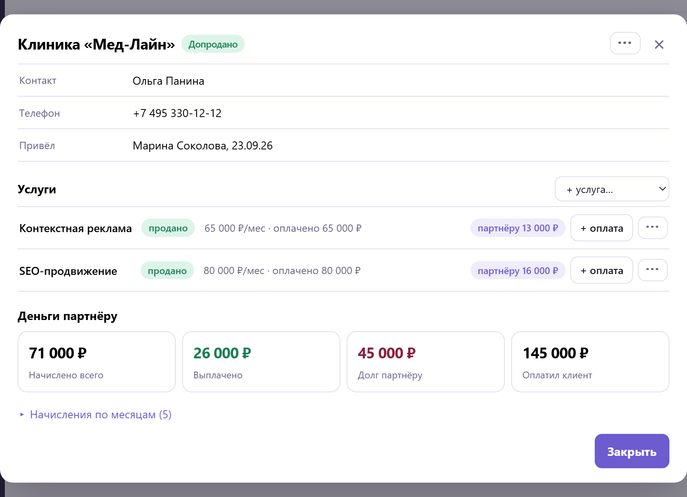
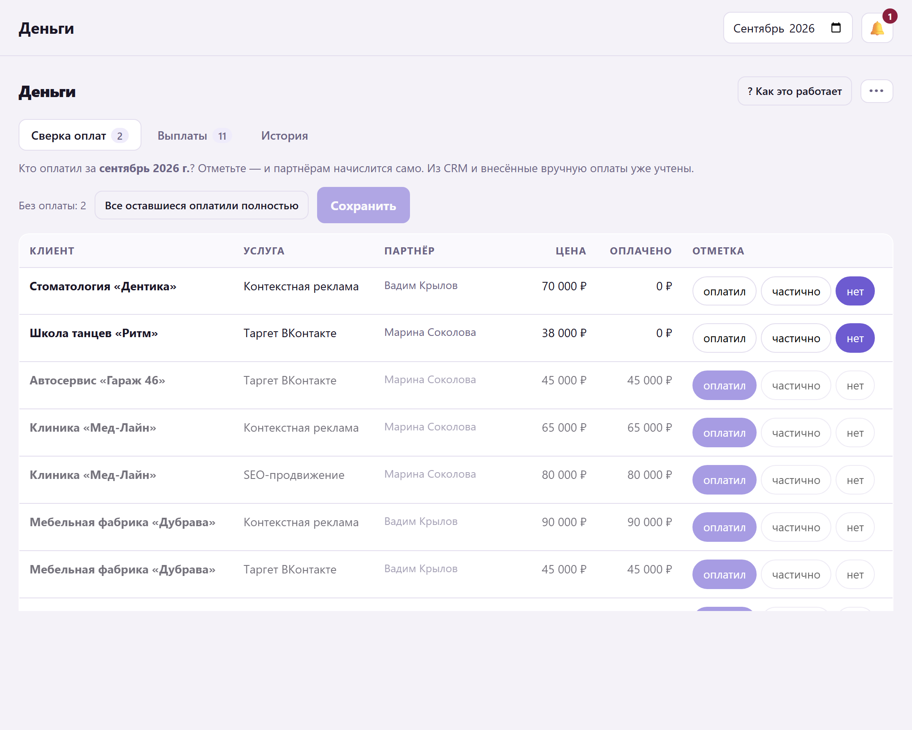
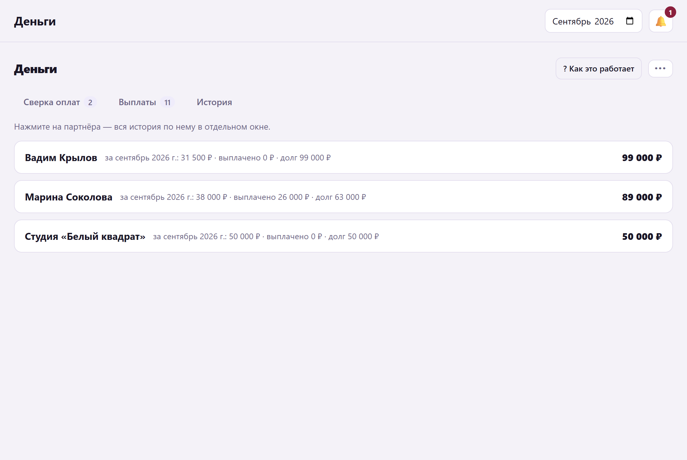
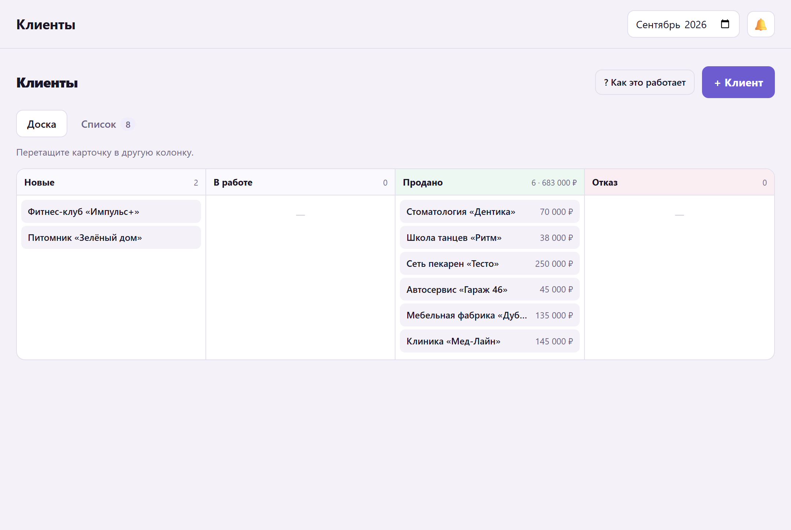
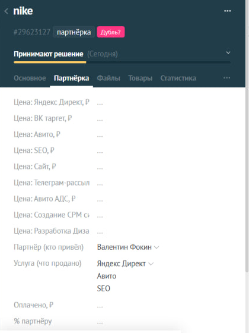
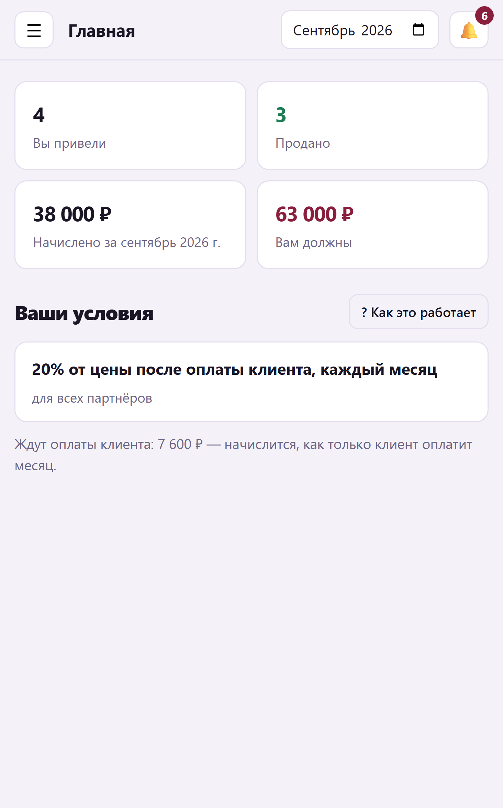

Партнёры приводят клиентов.
Вы точно знаете, кто и сколько заработал
Система считает вознаграждение сама — по вашим правилам и данным вашей CRM. Без таблиц, споров и забытых выплат.
Без карты и договора на старте · подключение CRM — в тот же день
на закрытие месяца: сверили оплаты — начисления пересчитались
таблиц: расчёты, история и выплаты живут внутри
CRM из коробки: amoCRM и Битрикс24, без программиста
партнёров: пять или пятьсот — нагрузка на вас та же
Партнёрская сеть есть, а учёта — нет
Партнёрский канал умирает не от плохих условий, а от непрозрачных расчётов. Система убирает саму причину спора.
От рекомендации до выплаты — четыре шага
Помесячные услуги
Клиент платит каждый месяц — партнёр получает каждый месяц. Всегда или первые N месяцев, как решите.
Разовые услуги
Начисление проходит один раз и второй раз уже не появится — это запрещено на уровне базы данных.
Авансы и частичные оплаты
Менеджер пишет, сколько реально пришло. Пока сумма не закрыта — партнёр видит «ждёт оплаты».
Так выглядит кабинет
Настоящие экраны системы, не картинки дизайнера.





Менеджер работает там,
где привык
Подключение занимает вечер: вставили ключ доступа, нажали «Настроить» — система сама прочитала воронки, создала поля в карточке сделки и подписалась на события.

Партнёр видит свои деньги — и приводит ещё
Личная ссылка вместо пароля, работает на телефоне. Ни одного вопроса «а сколько мне начислили».

Если клиентов приводят люди, а не только реклама
Агентства и студии
Смежники передают клиентов: дизайн → реклама, сайт → продвижение.
Услуги для бизнеса
Бухгалтерия, юристы, логистика, IT — рекомендации от клиентов и коллег.
Производство и опт
Дилеры, монтажники, прорабы, дизайнеры интерьера — каждый со своим процентом.
Сервисы и подписки
Реферальная программа с выплатами, пока клиент платит абонентку.
14 дней бесплатно —
на ваших сделках
Не показываем демо на вымышленных цифрах. Подключаем вашу CRM, заводим ваших партнёров и условия — и смотрите, как система считает по реальным сделкам.
Что обычно спрашивают
Что входит в пробный период?
14 дней полного доступа: подключение CRM, перенос партнёров и условий, кабинеты партнёров, расчёты и выплаты. Помогаем настроить и отвечаем в переписке всё время пробы.
Сколько стоит после пробного периода?
Стоимость зависит от числа партнёров и вашей CRM — считаем под задачу. Для сравнения: отдельные сервисы учёта партнёрок на рынке стоят от 10 000 ₽/мес и при этом не знают вашу CRM.
Нужен программист?
Нет. Подключение — это вставить ключ доступа из вашей CRM и нажать «Настроить»: поля в карточке сделки и уведомления система создаёт сама.
Что видит партнёр?
Только своих клиентов: статус каждого, причину отказа, свои начисления и выплаты. Ваши внутренние суммы, других партнёров и чужих клиентов он не видит.
Когда начисляется вознаграждение?
После реальной оплаты клиента. Если оплатили частично, партнёр видит «ждёт оплаты» и точную сумму остатка — переплат не бывает.
Можно разные проценты по услугам и партнёрам?
Да: общий процент программы, личный процент партнёра, процент на услугу и особый процент на конкретную сделку. Менеджер может поправить его прямо в CRM.
А если у нас нет CRM?
Работает и без неё: клиентов, этапы и оплаты можно вести прямо в кабинете — доска и карточки клиентов там есть.
Где хранятся данные?
В вашей копии системы. Делаем резервные копии, при переезде отдаём выгрузку — данные ваши.